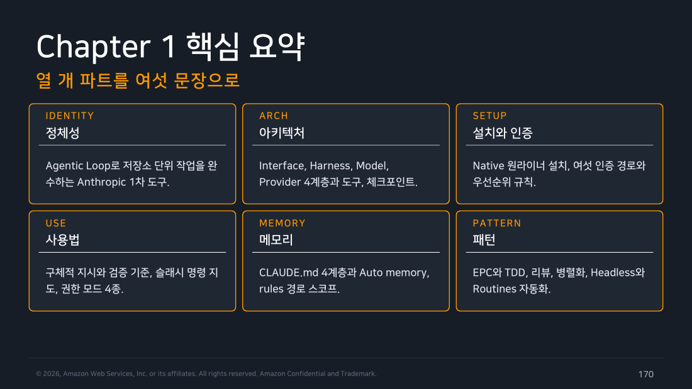
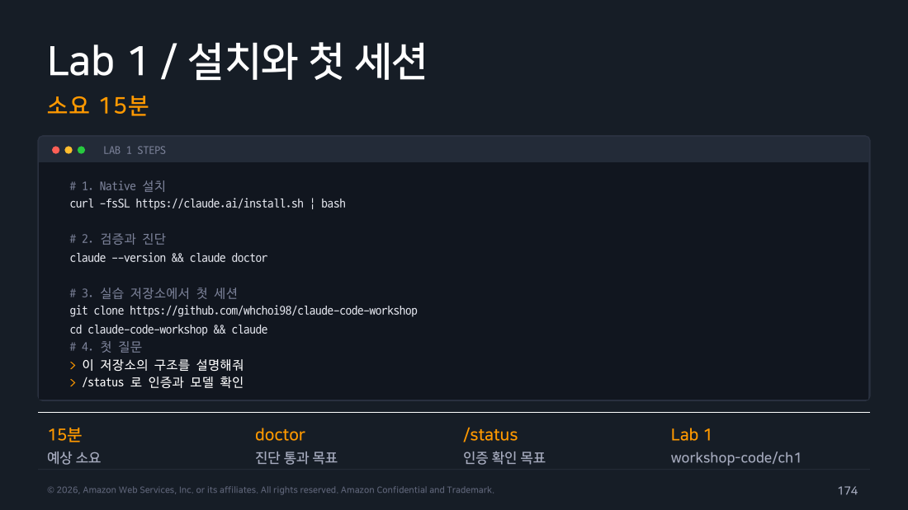
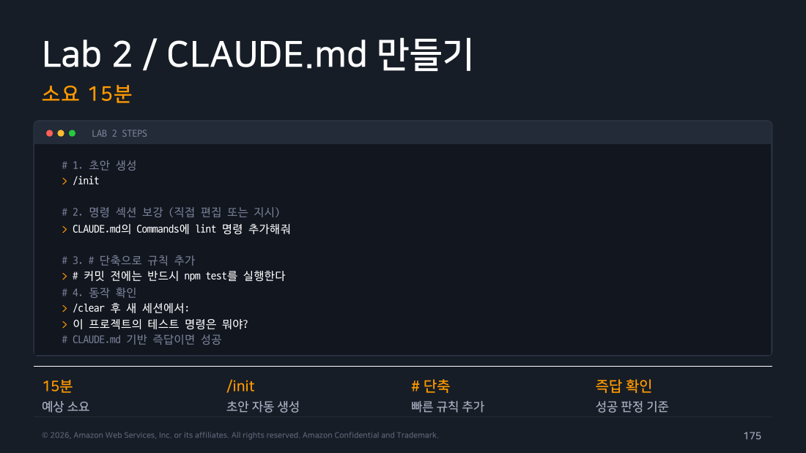
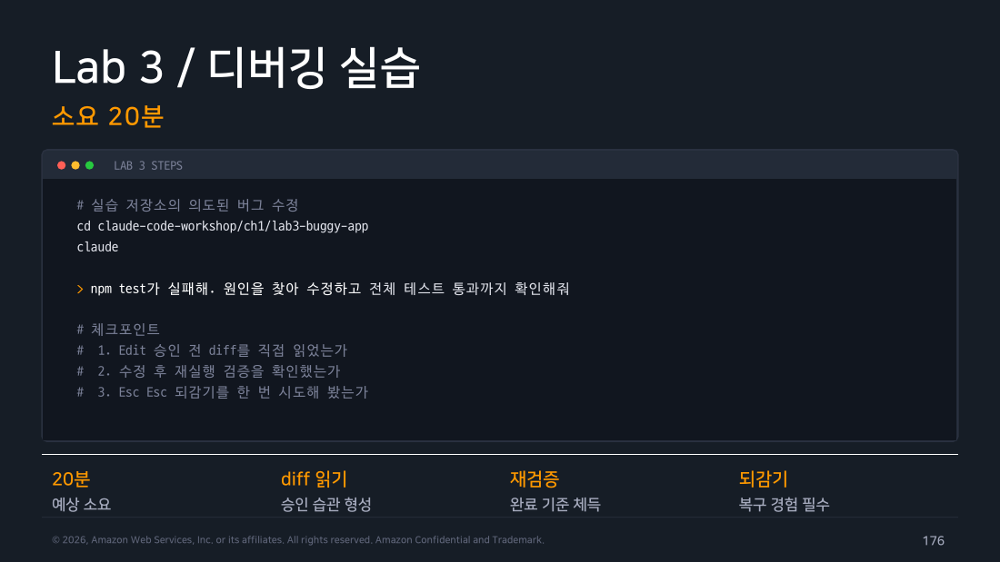
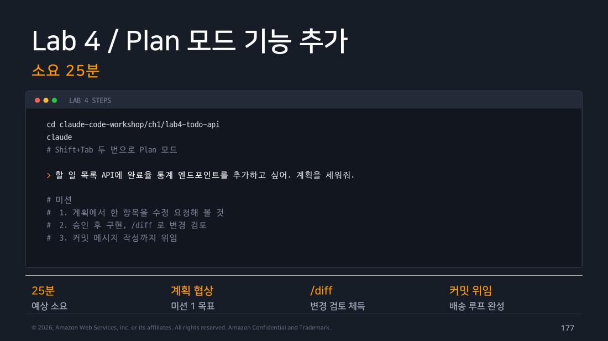
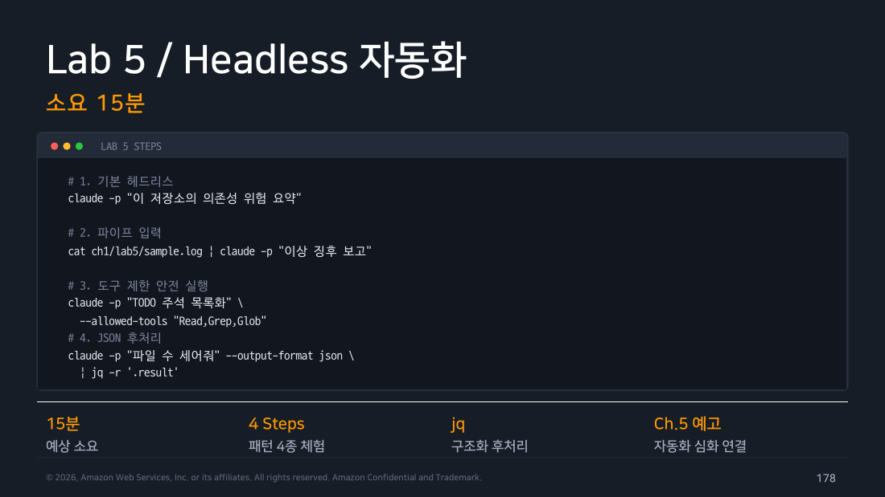

Part 10 — Recap & Labs¶
한 줄 요약¶
Chapter 1의 열 개 파트를 여섯 문장으로 압축하고, 실습 랩 5종을 실제로 수행한 기록을 남깁니다.
Chapter 1 핵심 요약 — 열 개 파트를 여섯 문장으로¶
정체성. Claude Code는 Agentic Loop(수집 → 실행 → 검증의 반복)로 저장소 단위 작업을 완수하는 Anthropic의 1차 도구입니다. 자동완성과의 차이는 범위와 검증 책임입니다.
아키텍처. Interface / Harness / Model / Provider 네 계층이고 본체는 하네스입니다. 도구 실행, 권한 검사, 컨텍스트 관리, 체크포인트가 전부 여기서 일어납니다.
설치와 인증. Native 원라이너가 새 표준이며 Node.js가 필요 없습니다. 인증은 여섯 경로가 있고 충돌하면 우선순위 규칙으로 하나가 선택됩니다.
사용법. 좋은 프롬프트는 범위·금지 조건·완료 기준을 담습니다. 슬래시 명령은 워크플로 단계별로 묶여 있고, 권한 모드는 설정값 기준 6종 / Shift+Tab 기본 순환 3종으로 자율성을 조절합니다.
메모리. 내가 쓰는 CLAUDE.md는 4계층으로 병합되고, Claude가 쓰는 Auto memory가 학습을 축적합니다. 길어지면 rules의 경로 스코프로 쪼갭니다.
패턴. EPC를 축으로 TDD, 코드리뷰, 병렬화, Headless, Routines를 얹습니다. 모든 패턴의 공통점은 명세를 함께 준다는 것입니다.

▲ 교재 슬라이드 170 — Chapter 1 핵심 요약
FAQ¶
현장에서 가장 많이 나오는 여섯 가지입니다.
-
"코드가 학습에 쓰이나요?" — 상업용 계정은 기본적으로 학습에 사용되지 않습니다. 명시적으로 동의한 경우에만 쓰이고, ZDR(Zero Data Retention) 옵션을 계약하면 보존 자체가 없습니다. → Part 1
-
"구독과 API 중 무엇이 좋나요?" — 개인은 구독이 단순하고 저렴합니다. 조직은 이미 쓰는 클라우드를 따라가는 게 맞아서 대개 Bedrock, 아니면 Console입니다. → Part 4
-
"Windows에서 잘 되나요?" — Native로 공식 지원되고 CMD와 PowerShell도 지원합니다. WSL2가 필요한 건 샌드박스를 쓸 때뿐입니다. → Part 3
-
"실수로 망가뜨리면요?" — 편집 전 스냅샷이 자동으로 남습니다.
Esc두 번 또는/rewind로 되돌립니다. 단, 파일 변경만 되돌아갑니다. → Part 5 -
"팀 표준은 어떻게 만드나요?" —
CLAUDE.md와.claude/rules/를 버전 관리에 넣으면 팀 전체가 같은 규칙을 공유합니다. → Part 8 -
"비용 통제가 되나요?" —
/usage분해 뷰로 소비처를 특정하고, 난이도별 모델 배분으로 줄입니다. 조직 단위는 OTel로 집계합니다. → Part 9
실습 랩 — 실제 수행 기록¶
아래는 2026-08-02에 직접 실행한 결과입니다. 출력은 편집 없이 그대로 옮겼습니다. 실행 환경: macOS 26.5.1 (Darwin 25.5.0, arm64), Claude Code 2.1.220
Lab 1 — 설치와 첫 세션 (소요 15분)¶

▲ 교재 슬라이드 174 — Lab 1 — 설치와 첫 세션 (교재 원본 실습 안내)
1-1. 설치 확인¶
$ which claude
/Applications/cmux.app/Contents/Resources/bin/claude
$ claude --version
2.1.220 (Claude Code)
1-2. 종합 자가 진단 — claude doctor¶
$ claude doctor
Claude Code doctor
Running: npm-global (2.1.220)
Commit: 4073f59596e2
Platform: darwin-arm64
Path: /opt/homebrew/lib/node_modules/@anthropic-ai/claude-code/bin/claude.exe
Config install method: global
Search: OK (bundled)
Auto-updates: enabled
Auto-update channel: latest
Last update attempt: success → 2.1.220 (2026-07-28)
Remote Control
Control this session from claude.ai/code or the Claude mobile app
No installation issues found.
For a full setup checkup that can also fix issues, run /doctor in a Claude Code session.
직접 해보고 알게 된 것
내 환경은 Running: npm-global, 경로가 /opt/homebrew/lib/node_modules/@anthropic-ai/claude-code/... 였습니다.
즉 Part 3에서 "레거시"라고 정리한 npm 경로로 설치되어 있었습니다.
다행히 Auto-updates: enabled, Auto-update channel: latest로 자동 업데이트는 동작 중이었고(2026-07-28에 2.1.220으로 갱신 성공), Search: OK (bundled)로 ripgrep도 번들 버전이 잡혀 있었습니다.
claude doctor는 "내가 어떤 경로로 깔았는지"를 알려주는 유일한 명령입니다. 문서만 읽었을 때는 당연히 Native일 거라 생각했는데 아니었습니다.
1-3. 실습 저장소 클론¶
$ git clone --depth 1 https://github.com/whchoi98/claude-code-workshop
Cloning into 'claude-code-workshop'...
$ ls claude-code-workshop
20260525 20260703 CHANGELOG.md CLAUDE.md README.md
Script ccw-hands-on-lab tech_doc
1-4. 첫 질문¶
실제 응답:
Claude Code 딥다이브 워크숍용 콘텐츠 저장소입니다 (빌드 시스템·테스트·애플리케이션 코드 없음).
20260525/,20260703/— 날짜별 커리큘럼 에디션. 각각 Ch1 개요 ~ Ch6 Agent SDK까지 6개 챕터 PDF (20260703/이 최신판).Script/workshop-code/— 슬라이드에서 추출한 코드 스니펫 562개 마크다운.chN-주제/part-NN-슬러그/NNN-슬러그.md구조이며NNN은 원본 슬라이드 번호.tech_doc/— 아키텍처·비용 효율 PDF 2종.ccw-hands-on-lab/— 챕터별·캡스톤별 핸즈온 랩과 레퍼런스 HTML 문서 모음 (index.html이 진입점).README.md,CHANGELOG.md— 영문 섹션 먼저, 한글 섹션 뒤에 오는 이중 언어 문서.주의할 점: PDF는 외부에서 관리되는 원본 덱으로부터 렌더링된 산출물이라 직접 수정하지 않습니다. 참고로
ccw-hands-on-lab/은 현재 CLAUDE.md의 저장소 레이아웃 설명에 빠져 있습니다.
관찰
마지막 한 줄이 흥미로웠습니다. 시키지도 않았는데 저장소의 CLAUDE.md와 실제 디렉토리 구조가 불일치한다는 걸 찾아냈습니다.
Part 8에서 "메모리는 주기적으로 정리해야 한다"고 한 이유가 이런 것입니다. 문서와 실제가 어긋나면 그게 그대로 컨텍스트 오염이 됩니다.
- ✅ Lab 1 완료 기준:
doctor진단 통과 + 저장소 구조 답변 획득.
Lab 2 — CLAUDE.md 만들기 (소요 15분)¶

▲ 교재 슬라이드 175 — Lab 2 — CLAUDE.md 만들기 (교재 원본 실습 안내)
교재 저장소에는 이미 CLAUDE.md가 있어서, /init의 "초안 생성"을 그대로 재현하려고 빈 데모 프로젝트를 새로 만들어서 진행했습니다.
2-0. 실습용 프로젝트 준비¶
$ mkdir -p lab2-demo/src && cd lab2-demo && git init -q
$ cat package.json
{
"name": "coupon-service",
"version": "0.1.0",
"scripts": {
"build": "tsc -p .",
"test": "vitest run",
"lint": "eslint src --fix"
}
}
$ cat src/coupon.js
// 쿠폰 검증. 에러는 AppError 로 래핑한다.
class AppError extends Error {}
function validateCoupon(coupon, now) {
if (coupon.expiresAt < now) throw new AppError('EXPIRED');
if (coupon.usedAt) throw new AppError('ALREADY_USED');
return coupon.discountRate;
}
module.exports = { validateCoupon, AppError };
2-1. /init 실행¶
$ claude -p "/init" --permission-mode acceptEdits
Created `CLAUDE.md`. There was no existing one, no README, and no Cursor/Copilot rules.
...
생성된 CLAUDE.md (전문):
# CLAUDE.md
This file provides guidance to Claude Code (claude.ai/code) when working with code in this repository.
## Commands
```bash
npm run build # tsc -p .
npm test # vitest run
npm run lint # eslint src --fix
```
Run a single test file / test name once vitest is wired up:
```bash
npx vitest run src/coupon.test.js
npx vitest run -t "expired coupon"
```
## Repository state
This is a minimal scaffold (`coupon-service`, one commit). Be aware of the gaps before running the commands above:
- `package.json` has **no dependencies or devDependencies** — `tsc`, `vitest`, and `eslint` are not installed, so all three scripts fail until they are added.
- There is no `tsconfig.json`, so `npm run build` has nothing to configure `tsc -p .` with, and no ESLint config for `npm run lint`.
- The build script assumes TypeScript, but the only source file is CommonJS JavaScript (`src/coupon.js` uses `module.exports`). Either migrate the source to TS or change the build step — don't assume the current script reflects the intended toolchain.
- There are no tests yet.
## Architecture
`src/coupon.js` is the whole implementation. The convention it establishes:
- `AppError extends Error` is the wrapper for all domain failures; error identity is carried by the **message string as a code** (`'EXPIRED'`, `'ALREADY_USED'`), not by subclasses or a `code` field.
- `validateCoupon(coupon, now)` takes the current time as an explicit parameter rather than reading the clock. Keep time injection when extending this — it is what makes the logic testable.
- The function throws on failure and returns `coupon.discountRate` on success, so callers must wrap it in try/catch rather than checking a return value.
Source comments are written in Korean; match that when editing existing files.
직접 해보고 알게 된 것 (예상과 가장 달랐던 부분)
/init이 그냥 "빌드 명령 목록"만 뽑을 줄 알았는데, package.json의 스크립트가 거짓말이라는 걸 찾아냈습니다.
"build": "tsc -p ."인데 소스는 CommonJS JS이고, tsc·vitest·eslint가 devDependencies에 아예 없어서 세 명령 다 실패한다는 걸 ## Repository state 섹션에 명시했습니다.
그리고 now를 파라미터로 주입하는 패턴을 "이게 테스트 가능성을 만드는 부분이니 확장할 때 유지하라" 고 이유까지 붙여 기록했습니다.
Part 8의 "메모리는 config가 아니라 context"라는 말이 이걸 뜻하는 거였습니다.
2-2. 규칙 추가¶
세션 안에서는 # 단축을 쓰지만, 여기서는 결과를 확인하려고 파일에 직접 덧붙였습니다.
2-3. 동작 확인 — 새 세션이 CLAUDE.md를 정말 읽는가¶
교재의 성공 판정은 "탐색 없이 즉답하면 성공"입니다.
이걸 확실히 증명하려고 도구를 하나도 허용하지 않고 물었습니다. 파일을 읽을 수단이 없으므로, 답을 한다면 그건 오직 자동 로드된 CLAUDE.md에서 나온 것입니다.
응답:
테스트 명령
단일 파일/테스트만 돌릴 때:커밋 전 규칙 (CLAUDE.md의
## Don't섹션) 1. 커밋 전에는 반드시npm test를 실행한다. 2. requirements 파일은 직접 수정 금지.주의할 점:
package.json:1-9에 dependencies/devDependencies가 아예 없어서vitest가 설치돼 있지 않습니다. 테스트 파일도 아직 없고요. 그래서 지금npm test를 실행하면 명령 자체가 실패합니다.
검증 메타데이터:
증명 완료
permission_denials가 비어 있습니다. 즉 도구를 쓰려다 막힌 게 아니라 애초에 쓸 필요가 없었습니다.
CLAUDE.md가 세션 시작 시 컨텍스트에 자동으로 들어간다는 Part 8의 설명이 그대로 확인됐습니다.
- ✅ Lab 2 완료 기준: 새 세션에서 탐색 없이 즉답 → 성공.
Lab 3 — 디버깅 실습 (소요 20분)¶

▲ 교재 슬라이드 176 — Lab 3 — 디버깅 실습 (교재 원본 실습 안내)
교재 자료를 어디서 찾아야 하는지부터 헤맸습니다 — 기록해 둡니다
PDF 슬라이드 176은 cd claude-code-workshop/ch1/lab3-buggy-app으로 시작합니다. 그런데 저장소를 전체 클론해도 그 경로는 없습니다. 브랜치는 main 하나뿐이고 태그도 없으며, lab3-buggy-app이라는 문자열 자체가 저장소 어디에도 없습니다.
처음에는 "교재 자산이 빠졌다"고 판단하고 시나리오를 직접 재현했는데, 그게 틀렸습니다. 실습은 온전히 제공되고 있었고 위치가 달랐을 뿐입니다.
ccw-hands-on-lab/ClaudeCode_Ch1_HandsOnLab.html← 실제 랩은 여기 있습니다. 브라우저로 열면 Task 1~7의 완전한 가이드가 나옵니다.- 이 랩은 저장소에서 클론하는 방식이 아니라 힙독으로 프로젝트를 직접 만들게 설계되어 있습니다. 그래서
ch1/디렉토리가 애초에 존재할 이유가 없습니다. - 참고로 구판(
20260525) PDF와Script/workshop-code/의 스니펫 아카이브는# 의도적으로 버그가 있는 코드 준비라고만 되어 있습니다. 경로를 지정한 건 신판(20260703) PDF뿐이고, 그 경로는 실재하지 않습니다.
교훈: PDF에 경로가 적혀 있어도 ccw-hands-on-lab/*.html을 먼저 열어보는 게 맞습니다. 아래는 그 HTML 랩의 시나리오를 그대로 따른 기록입니다.
3-0. 교재가 제공하는 실습 프로젝트¶
랩의 Task 3이 주는 힙독을 그대로 실행했습니다. 의존성 없는 Node.js 프로젝트 4개 파일이 만들어집니다.
// src/users.js — 주의: 일부 사용자는 profile 필드가 없음 (마이그레이션 미수행 상황)
export const users = [
{ id: 1, name: "Kim", profile: { email: "kim@example.com", plan: "pro" } },
{ id: 2, name: "Lee", profile: { email: "lee@example.com", plan: "free" } },
{ id: 3, name: "Park" } // ← profile 없음
];
// src/userService.js
export function getUserPlan(id) {
const user = getUser(id);
return user.profile.plan; // ← id 3 에서 터진다
}
test.js의 세 번째 테스트가 profile 없는 사용자에게 "unknown"을 기대합니다.
3-1. 버그 재현¶
$ npm test
Test 1 - pro 플랜 사용자: PASS
Test 2 - free 플랜 사용자: PASS
return user.profile.plan;
^
TypeError: Cannot read properties of undefined (reading 'plan')
at getUserPlan (.../src/userService.js:9:23)
교재가 예시로 적어둔 에러와 정확히 같습니다.
3-2. 교재 프롬프트를 그대로 전달¶
랩이 주는 문구를 한 글자도 바꾸지 않고 넣었습니다.
$ claude -p "npm test 실행 시 다음 에러가 발생합니다. 원인을 찾고 수정해 주세요.
TypeError: Cannot read properties of undefined (reading 'plan')
at getUserPlan (src/userService.js:9)
기대 동작: profile이 없는 사용자는 \"unknown\"을 반환해야 합니다.
수정 후 npm test로 3개 테스트가 모두 PASS 하는지 직접 확인해 주세요." \
--permission-mode acceptEdits \
--allowed-tools "Read,Edit,Write,Grep,Glob,Bash(npm test)" \
--output-format stream-json --verbose
Tip
이 프롬프트가 좋은 교보재입니다. 에러 메시지 + 기대 동작 + 검증 방법이 한 번에 들어 있습니다. Part 5에서 정리한 "범위 + 완료 기준"이 그대로 구현된 형태입니다.
3-3. 자율 작업 흐름 관찰 — 교재 예측과 실제가 달랐던 지점¶
랩의 "관찰 포인트"는 이렇게 예고합니다.
Read src/userService.js # 에러 지점 확인
Grep "profile" # 영향 범위 검색
Edit src/userService.js # 옵셔널 체이닝 + 기본값
Bash npm test # 수정 검증
--output-format stream-json으로 실제 도구 호출을 뽑아봤습니다.
직접 해보고 알게 된 것 — Grep을 쓰지 않았습니다
교재는 Grep "profile"로 영향 범위를 검색할 거라고 예고했는데, 실제로는 ls로 구조를 보고 네 파일을 전부 읽었습니다.
생각해보면 당연합니다. 프로젝트가 4개 파일뿐이라 grep보다 전부 읽는 게 빠릅니다. 검색은 "다 읽기엔 큰" 코드베이스에서 의미가 생기는 도구입니다.
교재의 흐름도가 틀린 게 아니라 상황에 따라 도구 선택이 달라진다는 걸 보여주는 사례입니다. Part 2에서 "모델이 판단하고 하네스가 실행한다"고 했는데, 그 판단이 실제로 어떻게 갈리는지가 여기서 드러납니다.
3-4. 수정 결과¶
Claude의 설명:
원인:
src/users.js:6의 사용자{ id: 3, name: "Park" }는 마이그레이션이 안 되어profile필드가 없습니다.getUserPlan은user.profile.plan을 무방비로 접근해서undefined.plan에서 TypeError가 발생했습니다.수정:
return user?.profile?.plan ?? "unknown";옵셔널 체이닝으로
profile누락을 처리하고,??로"unknown"폴백을 줬습니다.user?.까지 붙인 이유는 존재하지 않는 id를 조회할 때getUser가undefined를 반환하는 같은 계열의 크래시도 함께 막기 위해서입니다.
export function getUserPlan(id) {
const user = getUser(id);
- return user.profile.plan;
+ return user?.profile?.plan ?? "unknown";
}
교재가 예고한 수정 방향(옵셔널 체이닝 + 기본값)과 정확히 일치했습니다. 다만 요구된 범위보다 한 칸 더 방어했습니다 — user?.는 이번 버그와 무관하지만 같은 계열의 크래시를 막습니다. 그리고 그 이유를 먼저 설명했습니다.
3-5. 커밋 위임 (Task 5-4)¶
$ git log --oneline -2
80604bd fix: profile 없는 사용자 조회 시 TypeError 방지
388cacd chore: initial lab project
기존 커밋이 chore: 하나뿐이었는데 conventional commits 형식을 이어받았습니다.
- ✅ Lab 3 완료 기준 — 교재 체크포인트 달성
- 버그 재현 (
npm test실패 확인) - 자율 작업 흐름 관찰 (
stream-json으로 도구 호출 순서 캡처) -
npm test3개 전부 PASS - 변경 검토 후 커밋
Lab 4 — Plan 모드 기능 추가 (소요 25분)¶

▲ 교재 슬라이드 177 — Lab 4 — Plan 모드 기능 추가 (교재 원본 실습 안내)
PDF의 Lab 4(ch1/lab4-todo-api) 역시 실재하지 않는 경로입니다. Hands-on Lab HTML에서는 이 내용이 Task 5의 후반부에 들어 있습니다 — Lab 3에서 고친 그 프로젝트에 이어서 soft delete 기능을 Plan 모드로 추가하는 흐름입니다.
처음엔 '헤드리스로는 불가능'이라고 판단했는데 틀렸습니다
Plan 모드 진입이 Shift+Tab 키 입력이라 대화형이 필수라고 생각했지만, --permission-mode plan으로 진입하고 --resume <session_id>로 세션을 이어붙이면 계획 협상이 그대로 재현됩니다.
키 입력이 필요한 건 UI 조작이지 기능 이 아니었습니다.
4-1. Plan 모드로 계획 요청¶
교재가 주는 요구사항을 그대로 넣었습니다.
$ claude -p "사용자 soft delete 기능을 추가해 주세요.
- users 데이터에 deletedAt 필드 (기본 null)
- removeUser(id): deletedAt에 현재 시각 기록
- getUser / getUserPlan은 삭제된 사용자를 제외해야 합니다
- test.js에 삭제 시나리오 테스트 추가
구현 전에 계획을 먼저 보여 주세요." \
--permission-mode plan --output-format json
계획 (발췌):
getUser:users.find((u) => u.id === id && !u.deletedAt)—!u.deletedAt을 쓰면 필드가 없는 미마이그레이션 레코드도 "삭제 안 됨"으로 안전하게 처리됩니다 (기존profile방어 패턴과 동일한 이유)getUserPlan: 수정 불필요 — 이미getUser를 호출하므로 삭제된 사용자는undefined→?.체이닝으로"unknown"반환removeUser(id): 성공 시true/ 없거나 이미 삭제됐으면false(최초 삭제 시각이 덮어써지지 않음)판단이 필요했던 두 지점을 짚어둡니다: - 이미 삭제된 사용자 재삭제:
false를 반환하고 원래deletedAt을 보존하도록 했습니다. 만약 삭제 시각을 갱신하는 쪽이 맞다면 알려주세요. -getUserPlan은 코드 변경이 없습니다. 요구사항은getUser수정만으로 충족되며, 테스트로 이를 확인합니다.
git status는 비어 있었습니다 (Plan 모드는 소스를 건드리지 않음).
요구사항을 그대로 받아 적지 않았습니다
교재는 "getUser / getUserPlan은 삭제된 사용자를 제외해야 함"이라고 했는데, Claude는 getUserPlan은 고칠 필요가 없다고 판단하고 그 근거를 댔습니다. Lab 3에서 이미 ?. 체이닝을 넣었기 때문입니다.
요구사항을 액면 그대로 구현했다면 중복 방어가 들어갔을 겁니다. 직전 작업의 맥락을 이어서 판단한 것입니다.
4-2. 계획 협상 — 랩의 핵심 미션¶
랩은 "테스트는 별도 파일로 분리해 주세요"처럼 수정 지시 후 재계획을 받아 보세요" 라고 안내합니다. 그대로 해봤습니다.
$ claude -p "테스트는 별도 파일로 분리해 주세요. test.js 에 다 넣지 말고
soft delete 시나리오는 test-softdelete.js 로 빼주세요. npm test 로 둘 다 돌아가야 합니다." \
--resume "$SID" --permission-mode plan --output-format json
응답 (발췌):
test-helpers.js(신규) —check헬퍼를 추출. 4줄짜리 함수를 복붙해 두 곳이 어긋나는 걸 막습니다.package.json—"test": "node test.js && node test-softdelete.js"분리에 부수적 이점이 하나 있습니다: 삭제 테스트가 모듈 전역
users배열을 변경하는데, 파일이 나뉘면 별도 node 프로세스로 실행되어test.js의 조회 테스트가 삭제 부수효과에 오염될 여지가 아예 없어집니다. 한 파일에 몰아넣었을 때 필요했던 "순서 주의" 제약이 사라집니다.한 가지 짚어둘 점:
check는console.log만 하고 exit code를 건드리지 않습니다. 그래서 테스트가 FAIL 해도npm test는 exit 0으로 끝납니다 (…) CI에서 실패를 잡으려면process.exitCode = 1을 세팅해야 하는데, 이건 기존 동작을 바꾸는 범위 확대라 계획에서 뺐습니다.
직접 해보고 알게 된 것
제 요구는 "파일을 나눠달라"였는데, 왜 나누는 게 더 나은지를 제가 몰랐던 이유로 설명했습니다. 삭제 테스트가 전역 배열을 오염시키는 문제가 프로세스 분리로 자동 해결된다는 것 — 저는 그냥 정리 차원에서 요청한 것이었습니다.
그리고 범위를 넘는 개선(exit code)은 하지 않고 보고만 했습니다. "이건 기존 동작을 바꾸는 범위 확대라 계획에서 뺐다"고 명시했습니다. 요청하지 않은 변경을 슬쩍 끼워넣지 않는 태도가 Part 5의 "범위 고정"과 맞물립니다.
4-3. 승인 후 구현과 회귀 확인¶
최종 코드:
export function getUser(id) {
// deletedAt 필드가 없는 레코드는 "삭제 안 됨"으로 취급
return users.find((u) => u.id === id && !u.deletedAt);
}
export function getUserPlan(id) {
const user = getUser(id);
return user?.profile?.plan ?? "unknown"; // ← Lab 3 의 수정이 그대로 살아있다
}
// 이미 삭제됐거나 존재하지 않는 사용자면 false (최초 삭제 시각을 덮어쓰지 않음)
export function removeUser(id) {
const user = getUser(id);
if (!user) return false;
user.deletedAt = new Date().toISOString();
return true;
}
교재의 마지막 체크포인트인 터미널 회귀 확인:
$ npm test
Test 1 - pro 플랜 사용자: PASS
Test 2 - free 플랜 사용자: PASS
Test 3 - profile 없는 사용자: PASS
Test 1 - 삭제 전 기준선: PASS
Test 2 - removeUser 반환값: PASS
Test 3 - 삭제 후 getUser 제외: PASS
Test 4 - 삭제 후 getUserPlan 제외: PASS
Test 5 - 이미 삭제된 사용자 재삭제: PASS
Test 6 - 존재하지 않는 사용자 삭제: PASS
Test 7 - 다른 사용자는 영향 없음: PASS
Test 8 - deletedAt 타임스탬프 기록: PASS
- ✅ Lab 4 완료 기준 — 교재 체크포인트 3개 달성
-
npm test3개가 모두 PASS로 바뀌었다 (Lab 3) - Plan 모드에서 계획을 검토하고 승인 / 수정을 경험했다
- Plan 실행 후 터미널
npm test가 전부 PASS다 (11/11)
Lab 5 — Headless 자동화 (소요 15분)¶

▲ 교재 슬라이드 178 — Lab 5 — Headless 자동화 (교재 원본 실습 안내)
5-1. 파이프 입력 — 로그 분석¶
샘플 로그(/tmp/ccw-sample.log)를 만들어 파이프로 넣었습니다.
2026-08-02 10:01:03 INFO request id=a91 path=/api/orders status=200 12ms
2026-08-02 10:01:07 INFO request id=a92 path=/api/orders status=200 15ms
2026-08-02 10:01:11 ERROR request id=a93 path=/api/pay status=500 3021ms UnhandledPromiseRejection
2026-08-02 10:01:12 ERROR request id=a94 path=/api/pay status=500 3044ms UnhandledPromiseRejection
2026-08-02 10:01:19 WARN db pool exhausted active=20 idle=0
응답:
이상 징후 있음 — 3줄 보고:
- 징후: 10:01:11부터
/api/pay만 status=500 + 응답시간 3.0초대(정상 경로 12~15ms의 200배)로 급증, 동시에UnhandledPromiseRejection발생 후 8초 뒤 DB 풀 고갈(active=20 idle=0).- 원인 후보: (a) 결제 경로의 외부 PG/다운스트림 호출 3초 타임아웃 → 예외가 catch되지 않아 커넥션
release()누락 = 커넥션 릭, (b) 그로 인한 풀 고갈이 대기·지연을 증폭시키는 연쇄 장애, © 부차적으로 풀 max=20이 결제 트래픽 대비 과소.- 다음 확인:
/api/pay핸들러의 await 예외 처리·finally 릭 여부, PG 연동 타임아웃 설정값, 10:01:11 직전 배포/설정 변경 이력 — 릭이면 재시작으로 잠깐 회복 후 재발하므로 그 패턴으로 (a)와 ©를 구분할 수 있음.
현장 메모 (인프라 엔지니어 관점)
이게 Part 1에서 "로그 파이프 분석이 한 줄로"라고 한 것의 실체입니다. 특히 3번의 "릭이면 재시작으로 잠깐 회복 후 재발하므로 그 패턴으로 (a)와 ©를 구분할 수 있다" — 원인 후보를 나열하는 데 그치지 않고 감별 진단 방법을 제시했습니다. 온콜 중에 이걸 5초 만에 받는다는 건 실제로 의미가 큽니다.
5-2. 도구 제한 안전 실행 — 정말 막히는지 검증¶
문서로만 "안전하다"고 쓰긴 싫어서, 쓰기 도구를 뺀 상태로 일부러 파일 수정을 시켜봤습니다.
$ claude -p "CHANGELOG.md 파일 맨 아래에 '테스트' 라는 줄을 추가해줘" \
--allowed-tools "Read,Grep,Glob" --output-format json
응답:
CHANGELOG.md 맨 아래에
테스트줄을 추가하려 했으나, 파일 쓰기 권한이 아직 허용되지 않아 편집이 적용되지 않았습니다.
permission_denials 필드:
[{"tool_name":"Edit","tool_use_id":"toolu_01TQ6nnwGAphwTpKiDB98xrb",
"tool_input":{"file_path":".../CHANGELOG.md","old_string":"...","new_string":"...\n\n테스트\n"}}]
실제 파일 변경 여부:
검증 완료
Claude는 Edit를 시도했고, 하네스가 차단했으며, 파일은 그대로였습니다.
Part 2에서 "하네스가 도구 실행 전에 권한을 검사한다"고 한 구조가 눈으로 확인됩니다.
그리고 permission_denials에 시도하려던 내용까지 통째로 기록된다는 걸 알게 됐습니다. CI에서 "에이전트가 뭘 하려다 막혔는지"를 감사 로그로 뽑을 수 있다는 뜻입니다.
5-3. JSON 출력 후처리¶
$ claude -p "Script/workshop-code 아래 마크다운 파일 개수를 세어서 숫자만 답해줘" \
--allowed-tools "Bash(find:*),Glob" --output-format json > out.json
$ jq -r '.result' out.json
562
응답 JSON의 최상위 키 전체:
api_error_status duration_api_ms duration_ms fast_mode_disabled_reason
fast_mode_state is_error modelUsage num_turns
permission_denials result session_id stop_reason
subtype terminal_reason time_to_request_ms
total_cost_usd ttft_ms ttft_stream_ms type usage uuid
메타데이터 발췌:
{
"session_id": "8f580579-c5cf-4bfe-9178-43125217ef9f",
"total_cost_usd": 0.109508,
"duration_ms": 3898,
"modelUsage": {
"claude-opus-5[1m]": {
"inputTokens": 4,
"outputTokens": 99,
"cacheReadInputTokens": 48286,
"cacheCreationInputTokens": 8287,
"costUSD": 0.109508,
"contextWindow": 1000000,
"canonicalModel": "claude-opus-5",
"provider": "firstParty"
}
}
}
직접 해보고 알게 된 것
Part 9에서 정리한 result / modelUsage / usage / session_id 네 가지가 실제로 다 있었고, 문서에 없던 필드가 더 많았습니다 — total_cost_usd, duration_ms, ttft_ms(첫 토큰까지 시간), permission_denials, num_turns.
특히 total_cost_usd가 응답에 그대로 들어있어서, CI에서 비용 상한 가드를 거는 게 아주 쉽습니다.
그리고 inputTokens: 4 vs cacheReadInputTokens: 48286 — 입력의 99.99%가 캐시에서 읽혔습니다. Part 9의 "캐시 레버"가 왜 비용의 3축 중 하나인지 숫자로 보입니다.
5-4. 모델별 비용 비교 (추가 실험)¶
Part 9의 "모델 레버"를 숫자로 확인하고 싶어서, 완전히 같은 프롬프트를 모델만 바꿔 돌렸습니다.
$ for M in haiku sonnet; do
claude -p "src/checkout.js가 무슨 일을 하는지 한 문장으로" \
--model $M --allowed-tools "Read" --output-format json
done
| 모델 | 비용 | 입력 토큰 | 출력 토큰 | 소요 |
|---|---|---|---|---|
haiku |
$0.0264 | 18 | 407 | 7,402ms |
sonnet |
$0.1011 | 4 | 168 | 5,890ms |
Tip
같은 작업에 약 3.8배 차이가 났습니다. 다만 주의할 점이 있습니다. haiku가 출력 토큰을 2.4배 더 많이 썼고 시간도 더 걸렸습니다. "한 문장으로"라고 했는데 더 장황하게 답한 것입니다. 즉 "싼 모델 = 무조건 이득"이 아니라 "작업이 단순할수록 이득" 입니다. Part 9에서 "난이도별 배분"이라고 표현한 이유가 이것입니다.
5-5. 세션 저장 확인¶
Part 2의 "세션은 ~/.claude/projects/에 JSONL로 저장된다"를 확인했습니다.
$ ls -1 ~/.claude/projects/
-private-tmp-...-scratchpad-claude-code-workshop
-private-tmp-...-scratchpad-lab2-demo
-private-tmp-...-scratchpad-lab3-buggy-app
-Users-jade
-Users-jade-project-omc
작업 디렉토리 경로가 그대로 디렉토리명이 됩니다(
/→-). 이번 실습에서 만든 세 개 프로젝트가 각각 별도로 잡혔습니다. 경로가 바뀌면--continue가 이전 세션을 못 찾는다는 뜻이기도 합니다.
- ✅ Lab 5 완료 기준: 4패턴 체험 → 파이프 / 도구 제한 / JSON 후처리 / (추가) 모델 비용 비교까지 5종 수행.
실습 총평¶
| Lab | 상태 | 비고 |
|---|---|---|
| Lab 1 — 설치와 첫 세션 | ✅ 완료 | 내 설치가 Native가 아닌 npm-global이었음을 발견 |
| Lab 2 — CLAUDE.md 만들기 | ✅ 완료 | 도구 0개로 즉답 검증까지 성공 |
| Lab 3 — 디버깅 | ✅ 완료 | 교재 원본 시나리오 수행. 교재 예측과 달리 Grep을 안 씀 |
| Lab 4 — Plan 모드 | ✅ 완료 | --resume 체이닝으로 계획 협상 재현. 11/11 통과 |
| Lab 5 — Headless | ✅ 완료 | +모델 비용 비교 실험 추가 |
배운 것 중 문서에 없던 것¶
claude doctor는 "내가 어떤 경로로 설치했는지"를 알려주는 유일한 명령입니다. 문서만 읽으면 당연히 Native일 거라 생각하지만 아닐 수 있습니다.--output-format json의permission_denials에는 시도하려던 tool_input이 통째로 들어갑니다. 무인 실행 감사 로그로 그대로 쓸 수 있습니다.total_cost_usd가 응답 JSON에 있습니다. CI 비용 가드를 거는 데 별도 계측이 필요 없습니다.cacheReadInputTokens가 실제 입력 토큰을 압도합니다 (48,286 vs 4). 캐시 친화적으로 쓰는 게 비용에 미치는 영향이 생각보다 훨씬 큽니다.- "테스트 파일은 수정하지 마"는 디버깅 위임 시 필수 지시입니다. 없으면 테스트를 고쳐서 통과시킬 여지가 생깁니다.
- Plan 모드는 헤드리스로도 협상할 수 있습니다.
--permission-mode plan+--resume <session_id>조합이면 됩니다.Shift+Tab은 편의를 위한 UI일 뿐, 기능의 전제조건이 아닙니다. - 계획을 협상하면 버그를 코드가 아니라 문서에서 잡습니다. Lab 4에서
0/0 = NaN문제와deepStrictEqual의undefined키 문제가 구현 전에 계획서에 기록됐습니다. - PDF의 랩 경로는 실재하지 않지만 실습 자체는 온전히 제공됩니다.
ccw-hands-on-lab/*.html을 먼저 열어봐야 합니다. 저장소에서 클론하는 게 아니라 힙독으로 프로젝트를 만드는 설계라,ch1/디렉토리는 처음부터 있을 이유가 없었습니다.
추가 학습 자료¶
| 자료 | 링크 | 비고 |
|---|---|---|
| 공식 문서 | code.claude.com/docs/ko/overview | 본 덱의 1차 출처 |
| Best Practices | docs/ko/best-practices | 패턴의 원전 |
| GitHub 저장소 | anthropics/claude-code | 이슈, 릴리스 노트 |
| Bedrock 안내 | aws.amazon.com/bedrock | AWS 경로 심화 |
| MCP 표준 | modelcontextprotocol.io | 4주차 예습 |
| 워크샵 코드 | whchoi98/claude-code-workshop | 본 과정 실습 자료 |
Next — Chapter 2 예고 (2주차)¶
오늘 여러 번 등장한 서브에이전트를 하루 종일 파고듭니다.
| 주제 | 내용 |
|---|---|
| 에이전트 정의 | .claude/agents/ 마크다운으로 역할, 도구, 모델 지정 |
| 오케스트레이션 | 자동 위임 원리와 명시 호출, 병렬 실행 설계 |
| 실전 패턴 5 | 리뷰어, 테스터, 마이그레이터 등 검증된 구성 |
/batch 내부 |
워크트리 격리와 단위 분해 전략의 내부 동작 |
출처¶
- Claude Code Deep Dive Workshop — Chapter 1 / Part 10: Recap & Labs (14p)
- 공식 문서: Overview · Best practices · Headless mode · CLI reference
- 실습 기록: 2026-08-02, macOS 26.5.1 / Claude Code 2.1.220 환경에서 직접 실행